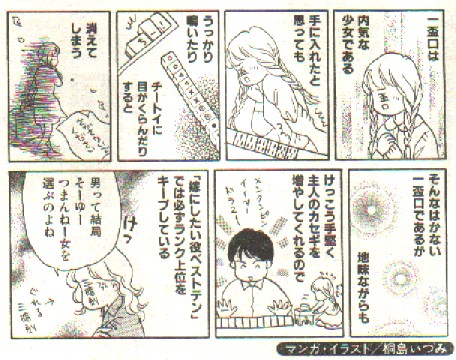

（1４）一般高
中国伝来の６枚役。一色同順子２組。日本麻雀では門前アガリ一翻、副露アガリ無翻。
一般高は第２次大戦前の日本麻雀ではまったく採用されていなかった。大戦直後、関西で急速に普及し、昭和22〜23年頃には関東にも伝播した。当初、「いっぱんこう」とか、「いっぺいこう」と呼ばれていたが正しい字が分からず、一配刻とか一並子という字が当てられていた。
日本で最初に成文化された立直ルール「報知ルール」の起草者とされる天野大三氏には、この「いっぺいこう」がまるで「一杯行こう」と言っているように聞こえたという。そこで盃と口を組み合わせ、「一盃口」と当て字したところ、この字が普及した。近年は本来の表記である「一般高」という字も用いられている。
一般高は一色両順(イーソーリャンシュン)、すなわち同じ順子二組という意味で使用されているわけであるが、実は、一般高＝一色両順というわけではない。一般高そのものは「同じような組み合わせ」というほどの意味であり、他の役でも使われている。
たとえば三色同刻は対一般高（トイイーパンカオ）、一色三順は清一般高（チンイーパンカオ）、三色三順は混一般高（ホンイーパンカオ）、そしてダブル一般高は双般高（シャンパンカオ）という具合である。
この一般高の系譜は次のようである。
一色両順(一般高) ・・ 一色三順(清一般高) ・・ 一色四順(四連太宝)
／
順子−
＼
二色両順(一姉妹) ・・ 二色四順(雅名、忘れた(~0~) )
＼
三色同順(三姉妹)
別名：一色同順(イーソートンシュン)・同両順(トンリャンシュン) ・同両就(トンリャンシュー)
・求成双(チューソンソワン)・哥倆好（カーリャンハオ）・高々（カオカオ）
当て字：一盃口・一平行・一並子・一並口・一配刻・一傍高・一色同潤
英名：Even(互角 or 平等)
・Two identicle Sequences（二つの平等な連続牌）
・Sister Sequence（姉妹の順子）